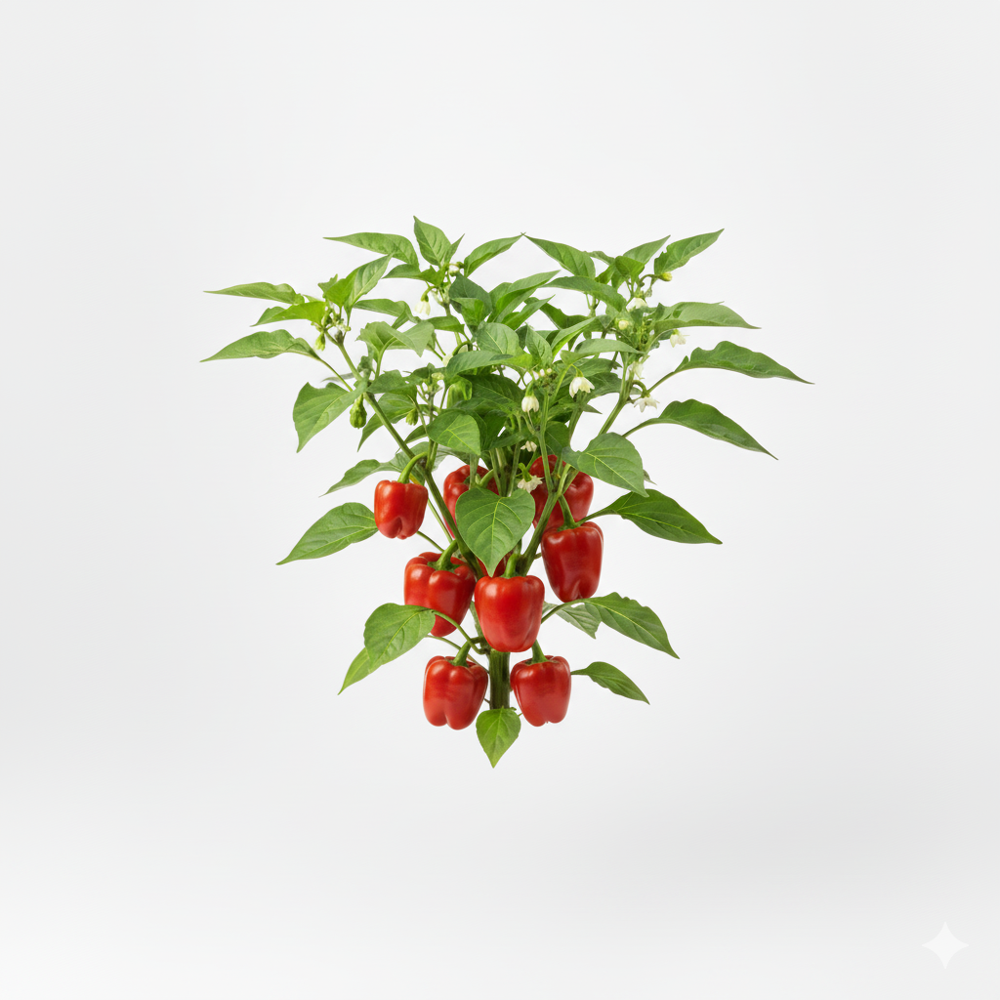
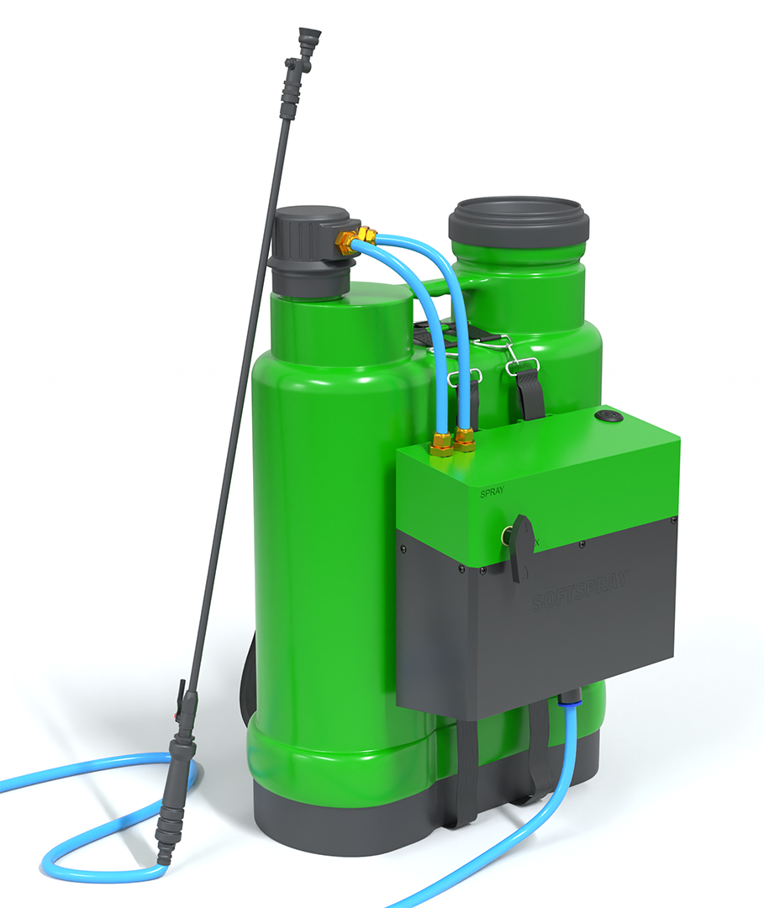
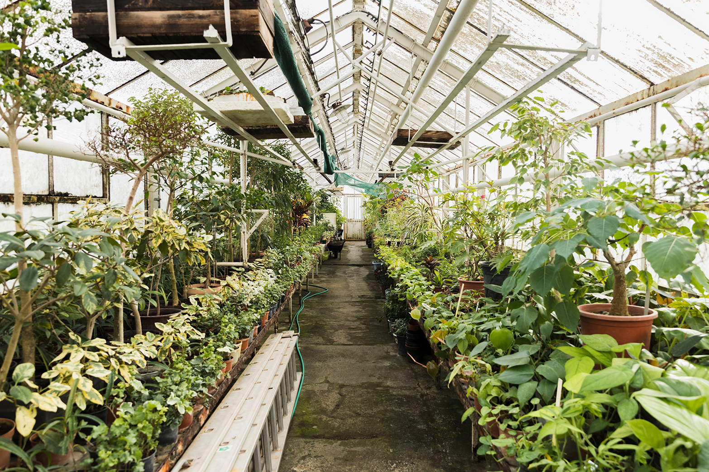

Softspray revolutionizes the spraying experience for farmers by eliminating the manual jerking of traditional pumps. Our innovative solution features a battery-operated decoupled sprayer designed for optimal efficiency, providing a uniform spray pattern to enhance coverage and reduce waste. With replaceable batteries, Softspray ensures extended operation and convenience, allowing farmers to focus on their work without the strain of manual spraying.

Our battery-operated sprayers provide uniform coverage, reducing waste and increasing productivity for farmers.

Expert advice on sustainable farming practices to help you maximize your yield and minimize environmental impact.
Regular maintenance and repair services to keep your farming equipment in top condition.
The Nigerian agricultural sector struggles with the manual spraying of pesticides and herbicides, impacting over 34 million farmers. Many experience discomfort due to the physical strain of traditional sprayers, which require jerking a lever to build pump pressure. Issues such as chemical spillage during mixing and the heavy weight of conventional sprayers further complicate the process, making it labor-intensive and time-consuming. Farmers typically need around 10 tank loads to cover just one hectare of land, underscoring the urgent need for a more efficient and ergonomic spraying solution.

Softspray offers a stress-free spraying experience by introducing:
Longer spraying activity time without pain for the farmers which leads to higher efficiency in farm work. This finally leads to higher productivity. By reducing physical strain, Softspray enables farmers to work longer hours, covering more land in less time. The ergonomic design minimizes injuries and fatigue, promoting better health and well-being among agricultural workers. Additionally, the uniform spray pattern ensures better crop protection, reducing chemical waste and environmental impact. Overall, Softspray contributes to sustainable farming practices, increased yields, and improved livelihoods for farmers across Nigeria.
The enhanced efficiency allows farmers to focus on growth and economic opportunities, fostering decent working conditions, aligned with UN SDG 8.
Softspray embodies innovation in agricultural practices, promoting sustainable infrastructure and technology, advancing UN SDG 9.
By increasing agricultural productivity, Softspray contributes to food security and improved nutrition, supporting UN SDG 2.
By reducing chemical spillage and promoting efficient usage, Softspray encourages responsible agricultural practices and resource management, supporting UN SDG 12.